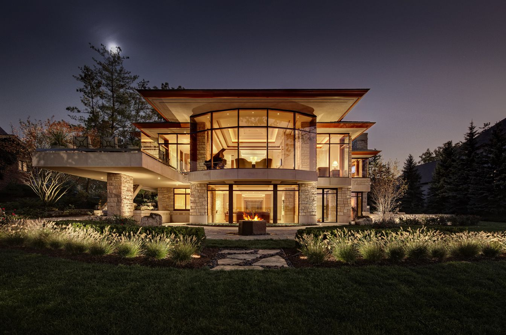

Flawless Fit, Lasting Performance
Proper installation is critical to the performance and longevity of any window or door system. We handle bifold, multi-slide, and lift-and-slide door installation along with large opening screen installation, emphasizing correct flashing, waterproofing, alignment, and finishing for long-term durability.
New Construction
Collaborative window and door installation planning with builders and design teams to align opening prep, sequencing, and finish details with your construction schedule.
Retrofit & Replacement
Careful window and door replacement and upgrade work that respects finished surfaces while improving energy performance, operation, and weather resistance.
Specialty Door & Screen Systems
Bifold, multi-slide, and lift-and-slide door installation, plus large opening screen installation, pull-down screens, and sliding screen doors for large openings.
Weatherproofing & Adjustments
We prioritize flashing, moisture management, and sealant strategy, then complete final tuning and hardware adjustments for smooth operation and clean finish quality.
Answers Before You Start
We supply a wide range of high-quality European and domestic windows and doors, including premium Albertini systems known for their craftsmanship and performance. On the door side, we carry bifold doors, multi-slide doors, and lift-and-slide door systems that open up large spaces and bring the outdoors in. We also offer screen systems for large openings, from retractable and pull-down styles to sliding screen doors, so big openings stay comfortable and bug-free. Whether you are building new, remodeling, or upgrading existing openings, we help you find products that match your design, climate, and performance goals.
Absolutely, product selection guidance is a core part of what we do. Choosing windows and doors involves more than picking a look you like. We consider your design goals, opening sizes, the local climate, energy efficiency, hardware preferences, and your budget, then match those to systems that perform well over the long term. We will walk you through the trade-offs between European and domestic manufacturers, different operating styles, and glass and finish options, so you understand exactly what you are getting. The result is a confident decision and products that look right and hold up for years.
Yes, screening large openings is one of our specialties. Standard screens often will not work on wide spans, multi-panel configurations, or tall openings, so we install systems designed for the job. Retractable screens disappear into a discreet housing when you are not using them, pull-down screens are ideal for covered patios and tall openings, and sliding screen doors track alongside the door panels. These pair naturally with bifold, multi-slide, and lift-and-slide doors, letting you open up the space and enjoy airflow without insects, all while keeping the view and the clean lines of the original design intact.
It depends on the condition of the system. Many issues, such as worn rollers, failed seals, foggy glass, or sticking hardware, are straightforward repairs that restore performance for years. When frames are warped, leaking, or no longer energy efficient, a window or door replacement is often the better long-term value, improving comfort, efficiency, and curb appeal. We will assess your openings honestly and recommend the option that makes the most sense for your home and budget.
We handle a full range of window and door repair. Common jobs include sliding door roller replacement, track repair and alignment, glass and seal replacement for foggy or broken panes, hardware and lock service, and weatherstripping to stop drafts and leaks. We also service and tune up specialty systems, including bifold, multi-slide, and lift-and-slide doors, which rely on precise rollers and tracks to operate smoothly. If your door drags, sticks, rattles, or has come off its track, we will diagnose the underlying cause rather than just treat the symptom, then realign, rebuild, or replace the worn parts so it opens and closes reliably again.
We provide window and door sales, installation, and service throughout Southern California. Our clients include homeowners, builders, architects, and designers, and we have completed projects across a range of communities and project types, from custom homes and luxury remodels to select commercial applications. As a family-owned business, we bring the same attention to detail and clear communication to every job, no matter the size. Reach out for a quote or to schedule a consultation, and we will follow up with next steps for your specific project.
Planning An Installation?
Let's align product, prep, and schedule from the start.